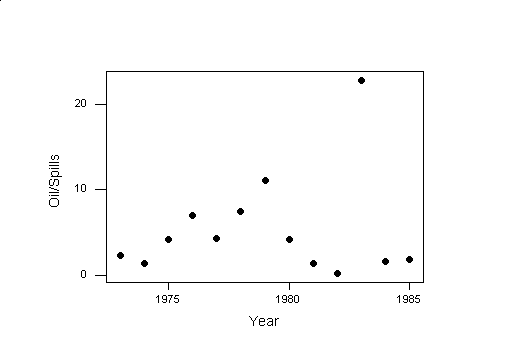

| / Home |
Keywords: regression, weighted regression, regression through the origin.
The following data from the Statistical Abstract of the United States give the number of accidental oil spills at sea and the amount of oil lost in these spills for the years 1973 - 1985.
| Variable | Description | ||
| Year | Year | ||
| Spills | Number of spills | ||
| Oil | Amount of oil lost (thousands of metric tonnes) | ||
Data File (tab-delimited text)
| Statistical Abstract of the United States 1987. |
| Hamilton, L. C. (1992). Regression with Graphics. Duxbury Press, Belmont, California, page 49. |
| Hamilton (1992) gives the units for Oil as millions of metric tons. Berwin Turlach, University of Western Australia, points out using historical data that the units are more likely to be thousands of metric tonnes. |
Clearly the number of spills is clearly decreasing over time. It is reasonable to look then at the amount of oil per spill.
An unweighted regression of Oil on Spill is inappropriate:
The regression equation is Oil = - 44 + 6.96 Spills
Predictor Coef StDev T P Constant -44.5 102.7 -0.43 0.673 Spills 6.957 2.832 2.46 0.032
S = 166.5 R-Sq = 35.4% R-Sq(adj) = 29.6%
Analysis of Variance
Source DF SS MS F P Regression 1 167218 167218 6.03 0.032 Residual Error 11 304844 27713 Total 12 472062
Unusual Observations Obs Spills Oil Fit StDev Fit Residual St Resid 7 65.0 723.5 407.7 103.3 315.8 2.42R 11 17.0 387.8 73.8 63.5 314.0 2.04R
R denotes an observation with a large standardized residual
The variance is proportional to the number of spills included. This changes the regression coefficient somewhat and reduces the standard errors:
Weighted analysis using weights in 1/Spills
The regression equation is Oil = - 13.6 + 6.00 Spills
Predictor Coef StDev T P Constant -13.56 68.32 -0.20 0.846 Spills 6.002 2.564 2.34 0.039
S = 29.89 R-Sq = 33.3% R-Sq(adj) = 27.2%
Analysis of Variance
Source DF SS MS F P Regression 1 4896.2 4896.2 5.48 0.039 Residual Error 11 9826.5 893.3 Total 12 14722.7
Unusual Observations Obs Spills Oil Fit StDev Fit Residual St Resid 11 17.0 387.80 88.47 40.82 299.33 2.57R
R denotes an observation with a large standardized residual
The intercept should in principle not be required. The average size of a spill is about 5.6:
Weighted analysis using weights in 1/Spills
The regression equation is Oil = 5.58 Spills
Predictor Coef StDev T P Noconstant Spills 5.583 1.397 4.00 0.002
S = 28.67 Analysis of Variance
Source DF SS MS F P Regression 1 13123 13123 15.97 0.002 Residual Error 12 9862 822 Total 13 22985
Unusual Observations Obs Spills Oil Fit StDev Fit Residual St Resid 11 17.0 387.80 94.91 23.75 292.89 2.53R
R denotes an observation with a large standardized residual
Is the average spill size changing with time? Now we must weight proportion to the number of spills:
Weighted analysis using weights in Spills
The regression equation is Oil/Spills = - 991 + 0.504 Year
Predictor Coef StDev T P Constant -991.2 863.4 -1.15 0.275 Year 0.5040 0.4366 1.15 0.273
S = 28.28 R-Sq = 10.8% R-Sq(adj) = 2.7%
Analysis of Variance
Source DF SS MS F P Regression 1 1065.8 1065.8 1.33 0.273 Residual Error 11 8795.9 799.6 Total 12 9861.7
Unusual Observations Obs Year Oil/Spil Fit StDev Fit Residual St Resid 11 1983 22.81 8.25 2.69 14.57 2.31R
R denotes an observation with a large standardized residual
The year 1983 appears to be an outlier.

|
Home - About Us -
Contact Us Copyright © Gordon Smyth |